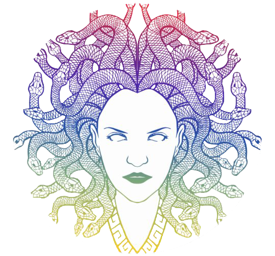
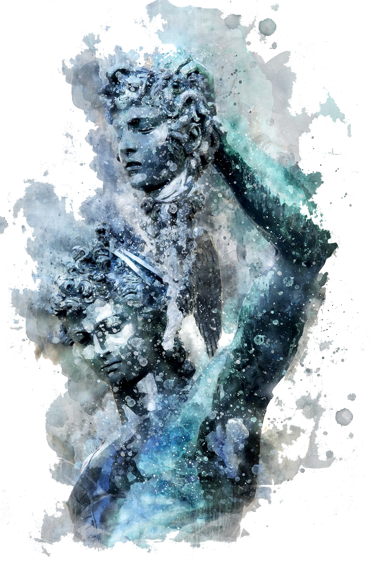
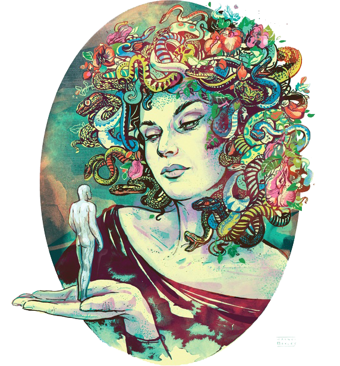
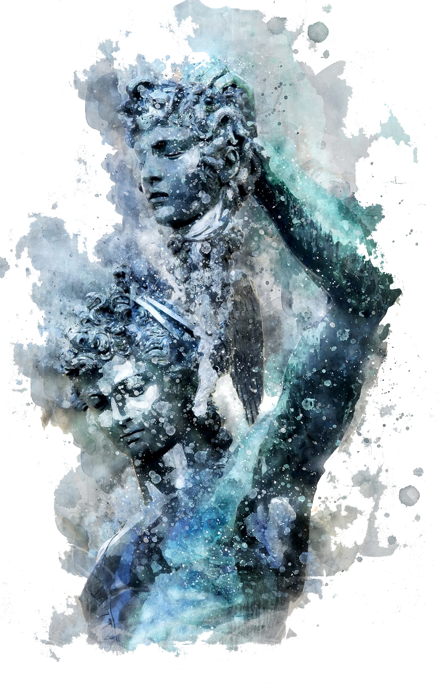

Medusa
The myth
Here's resume of the Medusa myth:

In Greek mythology, Medusa, also called Gorgo, was one of the three monstrous Gorgons, generally described as winged human females with living venomous snakes in place of hair. Those who gazed into her eyes would turn to stone. Most sources describe her as the daughter of Phorcys and Ceto,although the author Hyginus makes her the daughter of Gorgon and Ceto.
Medusa was beheaded by the Greek hero Perseus, who thereafter used her head, which retained its ability to turn onlookers to stone, as a weapon until he gave it to the goddess Athena to place on her shield. In classical antiquity the image of the head of Medusa appeared in the evil-averting device known as the Gorgoneion.


According to Hesiod and Aeschylus, she lived and died on an island named Sarpedon, somewhere near Cisthene. The 2nd-century BC novelist Dionysios Skytobrachion puts her somewhere in Libya, where Herodotus had said the Berbers originated her myth, as part of their religion.
In Greek mythology, Medusa, also called Gorgo, was one of the three monstrous Gorgons, generally described as winged human females with living venomous snakes in place of hair. Those who gazed into her eyes would turn to stone. Most sources describe her as the daughter of Phorcys and Ceto,although the author Hyginus makes her the daughter of Gorgon and Ceto.
Medusa was beheaded by the Greek hero Perseus, who thereafter used her head, which retained its ability to turn onlookers to stone, as a weapon until he gave it to the goddess Athena to place on her shield. In classical antiquity the image of the head of Medusa appeared in the evil-averting device known as the Gorgoneion.
According to Hesiod and Aeschylus, she lived and died on an island named Sarpedon, somewhere near Cisthene. The 2nd-century BC novelist Dionysios Skytobrachion puts her somewhere in Libya, where Herodotus had said the Berbers originated her myth, as part of their religion.
If you have time, you should read more about this myth in this Wikipedia entry.